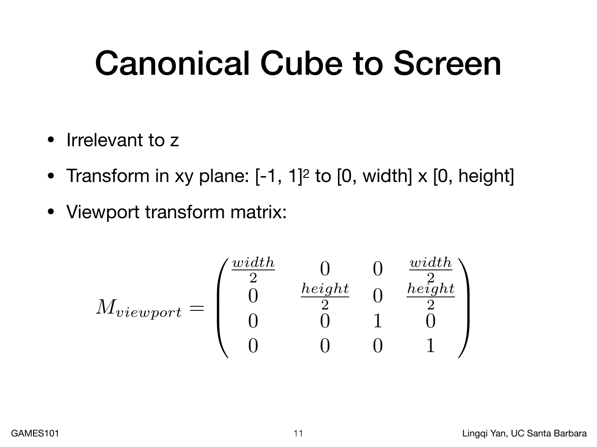
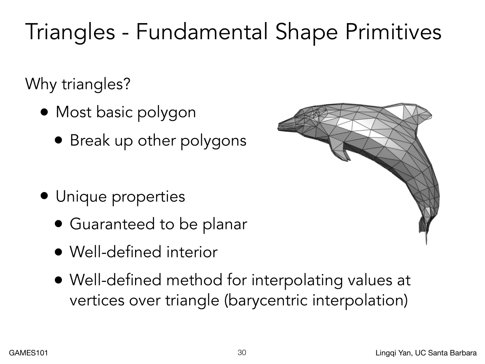
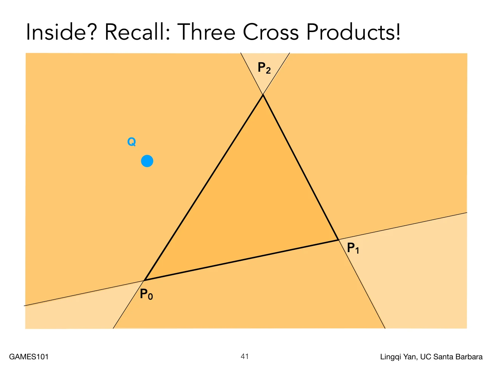
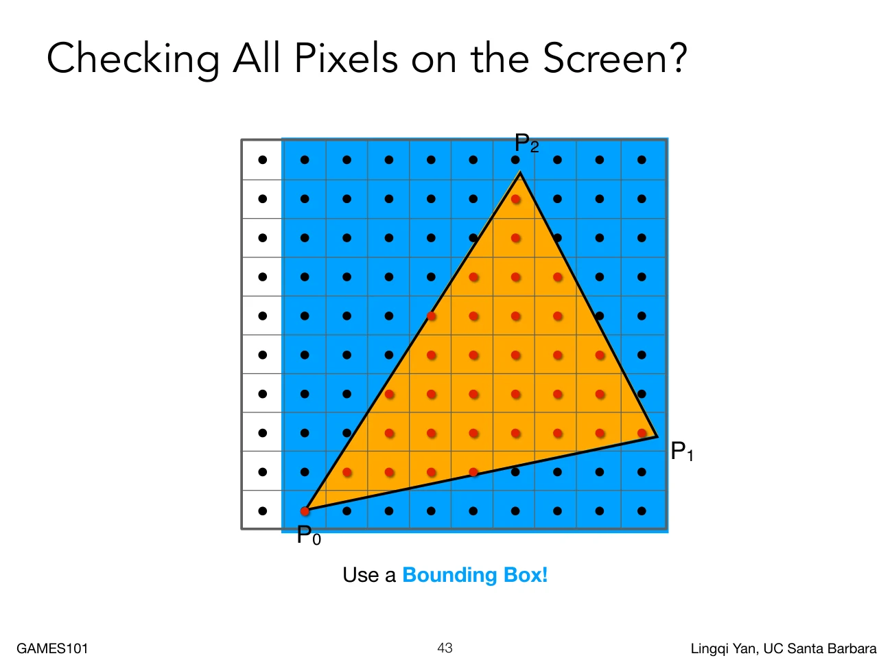
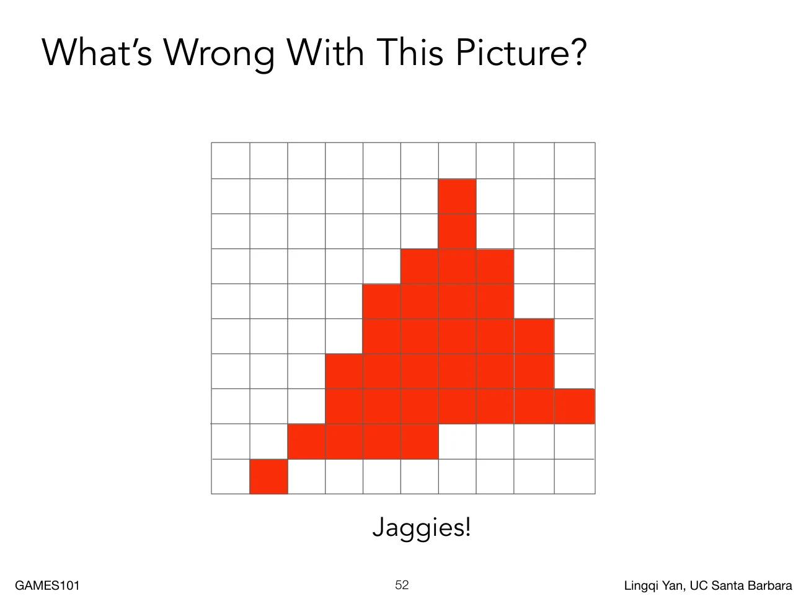

第 5 讲：光栅化（一）——三角形与采样
从投影后的标准立方体到屏幕像素：如何用采样把三角形画到屏幕上，以及为什么会出现锯齿。
◆ 学完这一讲，你应该能
理解视口变换（Viewport Transformation）的作用：把标准立方体映射到屏幕像素空间。
掌握屏幕空间的定义（像素索引、像素中心、覆盖范围）并写出视口变换矩阵。
理解光栅化就是判断像素中心是否在三角形内，并用采样实现。
掌握用叉积判断点是否在三角形内的方法，并知道边界情况的处理原则。
了解包围盒（Bounding Box）和增量遍历（Incremental Traversal）优化光栅化效率。
理解锯齿（Aliasing）产生的原因：离散采样与连续信号的矛盾。
核心结论速记
视口变换把标准立方体 [-1,1]^3 的 xy 平面映射到 [0,width]×[0,height] 的屏幕空间，z 保持不变。
屏幕是像素数组，像素 (x,y) 的中心在 (x+0.5,y+0.5)，屏幕覆盖范围是 [0,width]×[0,height]。
光栅化 = 对每个像素中心采样一个二值函数 inside(tri,x,y)，判断是否在三角形内。
判断点是否在三角形内：用三次叉积（或重心坐标）检查点是否始终在三条边的同一侧。
边界情况：点落在三角形公共边上时，可定义规则（如左上规则）避免重复或遗漏。
包围盒（Bounding Box）只遍历三角形覆盖的像素区域，避免检查整个屏幕。
增量遍历（Incremental Traversal）利用三角形边的连续性，适合细长或旋转的三角形。
锯齿（Jaggies）是采样不足导致的走样（Aliasing），后续用反走样（Antialiasing）解决。
011. 从投影到屏幕：视口变换
上一讲我们通过模型（Model）、视图（View）、投影（Projection）变换，把三维场景中的物体变换到了标准立方体（Canonical Cube）[-1,1]^3 中。但标准立方体还不是屏幕上的像素，我们需要把它映射到屏幕空间，这一步叫视口变换（Viewport Transformation）。
屏幕是什么？屏幕是一个像素数组，数组的大小就是分辨率（Resolution）。像素（Pixel）是“图像元素”（Picture Element）的缩写，目前我们把它看成一个均匀颜色的小方块。颜色由红、绿、蓝（RGB）混合而成。
屏幕空间的定义（与“老虎书”略有不同）：
- 像素的索引是整数对 (x,y)，范围从 (0,0) 到 (width-1, height-1)。
- 像素 (x,y) 的中心位于 (x+0.5, y+0.5)。
- 屏幕覆盖的范围是 [0,width] × [0,height]。
注意：视口变换与 z 无关，只在 xy 平面上进行。把 [-1,1]^2 映射到 [0,width] × [0,height]。变换矩阵为： \[ M_{\text{viewport}} = \begin{pmatrix} \frac{\text{width}}{2} & 0 & 0 & \frac{\text{width}}{2} \\ 0 & \frac{\text{height}}{2} & 0 & \frac{\text{height}}{2} \\ 0 & 0 & 1 & 0 \\ 0 & 0 & 0 & 1 \end{pmatrix} \]
这个矩阵先缩放（除以 2 再乘以宽高），再平移（加上宽高的一半），把 [-1,1] 映射到 [0,width] 和 [0,height]。z 坐标保持不变（仍在 [-1,1] 或 [0,1] 范围，取决于深度定义），用于后续深度测试。

补充说明
视口变换的 z 分量保持不变，但后续深度测试会用到 z，注意不同图形 API 的深度范围可能不同（OpenGL 是 [-1,1]，DirectX 是 [0,1]）。
常见坑
像素中心坐标写成 (x,y) 而不是 (x+0.5,y+0.5) → 采样位置偏移半个像素 → 光栅化结果整体偏移，检查采样点是否加了 0.5。
视口变换矩阵的平移项写成 width/2 和 height/2，但缩放项也用了 width/2 和 height/2，导致映射范围错误 → 检查矩阵：缩放是 width/2，平移是 width/2。
UE / Unity 落地
UE/Unity 中，视口变换由渲染管线自动完成，开发者通常通过设置相机视口矩形（Viewport Rect）或渲染目标分辨率来影响它。
在 UE 的材质中，ScreenPosition 节点返回的像素坐标已经经过视口变换，可以直接用于屏幕空间效果。
022. 三角形：光栅化的基本图元
光栅化的目标是把连续几何图形画到离散像素上。为什么用三角形？因为三角形是最基本的多边形，任何多边形都可以拆成三角形；而且三角形有唯一性质：
- 保证是平面（三点确定一个平面）；
- 内部定义明确（不会自交）；
- 有明确的方法在顶点之间插值（重心坐标插值）。
在屏幕上，我们已知三角形三个顶点投影后的位置，需要输出一组像素值来近似这个三角形。一个简单的思路是采样（Sampling）：对每个像素中心判断是否在三角形内。
采样是图形学的核心思想：我们采样时间（1D）、面积（2D）、方向（2D）、体积（3D）等。光栅化可以看作对二维指示函数（Indicator Function）的采样。

补充说明
三角形是最简单的多边形，但光栅化时仍需处理边界和采样问题。
常见坑
认为三角形越大越容易光栅化 → 实际上大三角形覆盖像素多，计算量大，需要包围盒优化。
忽略三角形的朝向（顺时针/逆时针） → 背面剔除可能出错 → 确保顶点顺序一致。
UE / Unity 落地
UE/Unity 中所有网格最终都三角化，导入模型时自动三角化。
背面剔除（Backface Culling）基于三角形顶点顺序，在材质或渲染设置中可开关。
033. 采样：用像素中心判断三角形覆盖
光栅化可以看作一个二值函数：给定三角形和点 (x,y)，判断点是否在三角形内。 \[ \text{inside}(t, x, y) = \begin{cases} 1 & \text{点 } (x,y) \text{ 在三角形 } t \text{ 内} \\ 0 & \text{否则} \end{cases} \]
对于屏幕上的每个像素 (x,y)，我们采样其中心点 (x+0.5, y+0.5)，调用 inside 函数，得到该像素的颜色（0 或 1，或三角形的颜色）。伪代码：
for (int x = 0; x < width; ++x)
for (int y = 0; y < height; ++y)
image[x][y] = inside(tri, x + 0.5, y + 0.5);
如何判断点是否在三角形内？可以用三次叉积（Cross Product）：对于三角形顶点 P0, P1, P2，点 Q，计算叉积 (P1-P0)×(Q-P0)、(P2-P1)×(Q-P1)、(P0-P2)×(Q-P2)，如果三个叉积的 z 分量符号相同（都为正或都为负），则 Q 在三角形内。
边界情况：点恰好落在三角形的边或顶点上。通常定义规则（如左上规则）决定归属，避免重复绘制或遗漏。

补充说明
叉积的 z 分量符号取决于二维向量的顺序，确保三角形顶点顺序一致（如逆时针）。
常见坑
叉积顺序不一致导致内外判断相反 → 检查三角形顶点顺序和叉积方向。
边界点处理不当导致相邻三角形之间出现缝隙或重复绘制 → 使用左上规则（Top-Left Rule）或类似规则。
UE / Unity 落地
UE/Unity 的光栅化由 GPU 固定管线完成，开发者无需手动实现 inside 函数，但理解原理有助于调试。
在像素着色器中，可以通过 SV_Position 语义获取像素中心坐标（DirectX），用于屏幕空间效果。
用叉积判断点是否在三角形内（伪代码）（cpp）
bool inside(vec2 p0, vec2 p1, vec2 p2, vec2 q) {
float c0 = cross(p1 - p0, q - p0);
float c1 = cross(p2 - p1, q - p1);
float c2 = cross(p0 - p2, q - p2);
return (c0 > 0 && c1 > 0 && c2 > 0) || (c0 < 0 && c1 < 0 && c2 < 0);
}044. 加速光栅化：包围盒与增量遍历
如果对屏幕上的每个像素都调用 inside 函数，计算量太大。实际上，三角形只覆盖屏幕的一小部分。我们可以用包围盒（Bounding Box）：取三角形三个顶点 x 和 y 的最小值和最大值，形成一个矩形，只遍历这个矩形内的像素。
对于细长或旋转的三角形，包围盒可能仍然包含大量不在三角形内的像素。增量遍历（Incremental Triangle Traversal）利用三角形边的连续性：对于每一行（或列），计算三角形与扫描线的交点范围，只遍历这些像素。这种方法更适合细长三角形，但实现更复杂。
现代 GPU 使用高度优化的光栅化算法，通常结合包围盒和分层扫描。

补充说明
包围盒是简单有效的优化，实际硬件还会使用更高级的层级光栅化。
常见坑
包围盒计算时忘记取整或取整方式不对 → 可能漏掉边缘像素 → 使用 floor 和 ceil 确保覆盖所有可能像素。
增量遍历时边界条件处理错误 → 出现裂缝或重复 → 仔细处理扫描线端点。
UE / Unity 落地
GPU 光栅化器自动使用包围盒和分层扫描，开发者无需手动优化，但了解原理有助于理解性能瓶颈。
在 UE 中，可以通过控制三角形数量（LOD）来减少光栅化开销。
055. 真实显示与锯齿：采样不足的后果
真实显示器（LCD、OLED 等）的像素并不是完美的均匀色块，但本课程假设像素是均匀颜色的方块，这足以讨论光栅化。
当我们把采样得到的二值图像送到显示器，显示器物理上发出的是离散的像素信号，而原始的三角形是连续函数。对比连续三角形和采样后的像素图像，会发现边缘呈锯齿状（Jaggies）。这就是走样（Aliasing）：用离散采样表示连续信号时，高频细节（如三角形边缘）无法被准确表示，产生锯齿。
锯齿是采样不足的表现。后续课程会介绍反走样（Antialiasing）技术，如超采样（Supersampling）或多重采样（Multisampling），通过增加采样点来减轻锯齿。

补充说明
锯齿是光栅化固有的问题，反走样是后续课程的重点。
常见坑
认为锯齿是显示器分辨率不够 → 实际上即使分辨率很高，锯齿仍可能存在，因为采样是离散的。
混淆走样（Aliasing）和摩尔纹（Moiré） → 两者都是采样问题，但表现不同。
UE / Unity 落地
UE/Unity 提供多种抗锯齿选项：MSAA（多重采样抗锯齿）、FXAA（快速近似抗锯齿）、TAA（时间抗锯齿）等，在项目设置或相机组件中开启。
在 UE 中，可以通过 r.AntiAliasingMethod 控制抗锯齿方法。
引擎对照表
| 概念 / 效果 | Unreal Engine | Unity |
|---|---|---|
视口变换 | 相机视口矩形（Viewport Rect）或渲染目标分辨率 | Camera 的 Viewport Rect 或 Render Texture 分辨率 |
三角形光栅化 | GPU 固定管线自动完成，开发者通过材质和网格控制 | GPU 固定管线自动完成，开发者通过材质和网格控制 |
背面剔除 | 材质中 Two Sided 选项或渲染设置 | Shader 中 Cull 指令或材质设置 |
抗锯齿 | 项目设置 Anti-Aliasing Method（MSAA、TAA 等） | Quality 设置 Anti Aliasing（MSAA）或相机组件 |
像素中心坐标 | 像素着色器 SV_Position 语义 | 像素着色器 SV_Position 语义 |
术语双语表
| English | 中文 | 说明 |
|---|---|---|
| Viewport Transformation | 视口变换 | 把标准立方体映射到屏幕像素空间的变换 |
| Rasterization | 光栅化 | 把连续几何图形转换为离散像素的过程 |
| Pixel | 像素 | 屏幕上的一个颜色小方块，是图像的基本单元 |
| Sampling | 采样 | 在离散点上评估连续函数的过程 |
| Inside Test | 内外测试 | 判断点是否在三角形内的二值函数 |
| Bounding Box | 包围盒 | 包围三角形的最小矩形，用于限制遍历范围 |
| Aliasing | 走样 | 采样不足导致的高频细节失真，表现为锯齿 |
| Jaggies | 锯齿 | 光栅化后三角形边缘出现的阶梯状现象 |
| Incremental Traversal | 增量遍历 | 利用三角形边的连续性逐行扫描像素的优化方法 |
课后练习
01 视口变换矩阵中，缩放和平移项分别是什么？如果屏幕分辨率是 800×600，写出完整的视口变换矩阵。
查看答案
提示：
缩放是 width/2 和 height/2，平移也是 width/2 和 height/2。
缩放项为 width/2 和 height/2，平移项为 width/2 和 height/2。对于 800×600，矩阵为： \[ M = \begin{pmatrix} 400 & 0 & 0 & 400 \\ 0 & 300 & 0 & 300 \\ 0 & 0 & 1 & 0 \\ 0 & 0 & 0 & 1 \end{pmatrix} \]
02 如何用叉积判断点 Q 是否在三角形 P0P1P2 内？写出三个叉积表达式并说明判断条件。
查看答案
提示：
叉积的 z 分量符号表示点在有向边的哪一侧。
计算三个叉积：c0 = (P1-P0)×(Q-P0)，c1 = (P2-P1)×(Q-P1)，c2 = (P0-P2)×(Q-P2)。如果 c0、c1、c2 的 z 分量符号相同（都为正或都为负），则 Q 在三角形内；否则在外部。
03 为什么光栅化后三角形边缘会出现锯齿？简述原因并列举一种减轻锯齿的方法。
查看答案
提示：
从采样和连续信号的角度思考。
锯齿是因为光栅化用离散像素中心采样连续三角形，采样点不足导致高频边缘信息丢失，表现为阶梯状。减轻方法：超采样（Supersampling），即每个像素取多个采样点求平均；或使用 MSAA、TAA 等抗锯齿技术。
04 包围盒（Bounding Box）如何加速光栅化？对于细长三角形，包围盒可能有什么问题？
查看答案
提示：
包围盒限制了遍历范围，但细长三角形可能覆盖大量空白区域。
包围盒取三角形顶点 x 和 y 的最小最大值形成矩形，只遍历矩形内像素，避免检查整个屏幕。对于细长三角形，包围盒可能包含大量不在三角形内的像素，导致效率降低，此时可用增量遍历（Incremental Traversal）优化。
05 在 UE 或 Unity 中，如何开启抗锯齿？至少说出两种方法。
查看答案
提示：
项目设置或相机组件。
UE：项目设置 → Rendering → Anti-Aliasing Method，可选 MSAA、TAA 等；或控制台命令 r.AntiAliasingMethod。Unity：Quality 设置中开启 Anti Aliasing（MSAA）；或相机组件中设置 Anti-aliasing；也可使用后处理抗锯齿（如 FXAA）。